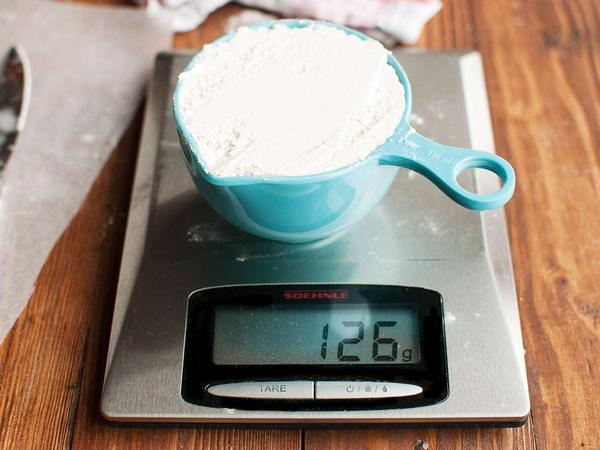

I still remember the first time I saw baker's percentage in a cookbook. I thought it was some kind of professional chef secret code. Flour 100%, water 65%, yeast 2%, salt 2%. I stared at the page for maybe five minutes. The percentages added up to way over 100. I thought the book had a typo.
Then I read the explanation and everything clicked. Baker's percentage isn't about the whole recipe adding up to 100. It's about flour being the anchor. Flour is always 100%. Everything else is measured against the flour. That's it. That's the whole thing. Once you get that, scaling recipes becomes almost stupidly easy.
Let me give you an example. A simple bread recipe might say 500 grams flour, 325 grams water, 10 grams salt, 5 grams yeast. In baker's percentage, that's flour 100%, water 65% because 325 divided by 500 is 0.65, salt 2%, yeast 1%. Those percentages tell you everything about the dough. At 65% hydration, you're looking at a fairly firm dough, good for sandwich bread. If the hydration was 75%, you'd be in ciabatta territory—wet, sticky, big holes. If it was 55%, you're making bagels.
The beauty of this system is that you can scale the recipe to any size just by deciding how much flour you want. Say you need 3,000 grams of flour for a big batch. Water stays at 65%, so 1,950 grams. Salt stays at 2%, so 60 grams. Yeast stays at 1%, so 30 grams. The percentages never change. Only the flour changes. That's why professional bakers use this. They don't memorize recipes. They memorize ratios.
I started using baker's percentage for bread first, because that's where everyone starts. But then I realized it works for almost anything. Cookies. Cakes. Muffins. Pancakes. Even some savory stuff if you're creative.
Take chocolate chip cookies. A typical recipe might have 280 grams flour, 200 grams butter, 200 grams sugar, 100 grams brown sugar, 100 grams eggs, 300 grams chocolate chips. Convert that to baker's percentage using flour as 100%. Butter is about 71%. Sugar is 71%. Brown sugar is 36%. Eggs are 36%. Chocolate chips are 107% which sounds weird because it's over 100 but that's fine. Percentages can go over 100.
Once you have those percentages, you can compare two cookie recipes side by side and see exactly why one spreads more. Higher butter percentage? They'll spread. Higher sugar? Crisper edges. Lower flour? Thinner. You're not just following a recipe anymore. You're understanding it.
I had a student once who couldn't figure out why her cookies always came out flat. We converted her recipe to baker's percentage. Her butter was at 85% of flour. That's really high. Standard is more like 60-70%. She cut the butter back to 65% and her cookies stopped spreading into pancakes. She told me later that this was the most useful thing she learned all semester. Not because the math was hard, but because no one had ever shown her how ingredients relate to each other.
Baker's percentage also helps you troubleshoot. Say you make a loaf of bread and it's too dense. You look at your recipe. If the hydration is below 60%, that's your problem. Too dry. Add more water next time. If the hydration is fine but the bread is still dense, maybe your salt is too high. Salt above 2.5% can tighten the gluten and slow down the yeast. Small tweaks make big differences once you understand the percentages.
Here's something I wish someone told me earlier. When you're developing your own recipe, start with the percentages, not the weights. Decide on the hydration you want. 70% is a good place for a basic country bread. Decide on salt. 2% is standard. Decide on yeast. 1% for instant yeast. Then pick a flour weight based on how much bread you want. For two loaves, maybe 1,000 grams flour. Then do the math. Water at 70% is 700 grams. Salt at 2% is 20 grams. Yeast at 1% is 10 grams. You just wrote a recipe from scratch.
I do this all the time now. Last week I wanted to make a small batch of cinnamon rolls, just six of them. I didn't look up a recipe. I started with 300 grams flour, 65% hydration, 2% salt, 1% yeast, 10% sugar, 10% butter. That gave me a soft, enriched dough. I added cinnamon and sugar filling. They turned out great. That's the freedom that baker's percentage gives you. You're not a prisoner to other people's recipes.
The scaling part is obvious once you have percentages. You want twice as many rolls? Double the flour. Keep the percentages the same. That's it. No recalculating every ingredient individually. Just one number changes.
But here's the catch I learned the hard way. Baker's percentage works perfectly for scaling when all you're changing is the flour weight. But if you're also changing the pan size or the shape, you might need to adjust hydration slightly. A shallow pan loses moisture faster in the oven. You might want to bump hydration up 2-3% to compensate. A deep pan retains moisture. You might cut back a little. These are small adjustments, but they matter if you're going for perfection.
I also messed up with eggs once. Eggs are tricky in baker's percentage because they're not pure liquid. They're part water, part fat, part protein. When you scale a cake recipe using baker's percentage, eggs usually scale linearly. But if your recipe calls for three eggs and you scale it to where you need 3.7 eggs, you can't use 0.7 of an egg. Round up to four eggs and adjust the liquid elsewhere. Or weigh your eggs. One large egg is about 50 grams. So 0.7 eggs is 35 grams. Crack three eggs into a bowl, whisk them, measure out 35 grams. That's a pain but it works.
Most of the time I just round up and move on. Baking is forgiving enough that an extra half egg usually doesn't ruin anything. But for super precise things like macarons or angel food cake, you want to be exact.
Let me show you a real example from my kitchen. I have a sourdough recipe that I've made maybe a hundred times. My standard batch uses 1,000 grams flour total, split between bread flour and whole wheat. 75% hydration because I like open crumb. 2% salt. 20% starter. The starter itself is 100% hydration, so it contributes flour and water to the total.
If I want to scale that recipe to feed a crowd, say 5,000 grams flour total, I just multiply. 5,000 grams flour. 75% hydration is 3,750 grams water. But 20% of the flour is coming from my starter, which is half water. So I have to do the subtraction. 20% of 5,000 is 1,000 grams of starter. That starter contains 500 grams flour and 500 grams water. So I only need to add 4,500 grams of additional flour and 3,250 grams additional water. Plus 100 grams salt. That math took me maybe a minute once I had the percentages. Without percentages, I'd be punching numbers for ten minutes and probably making mistakes.
That brings me to another point. Baker's percentage isn't just for bread. I use it for pancakes all the time. My basic pancake ratio is 100% flour, 120% milk, 40% eggs, 20% butter, 10% sugar, 2% baking powder, 1% salt. I can make pancakes for two people or twenty people just by picking a flour weight. 200 grams flour feeds about four people. 600 grams flour feeds twelve. The percentages stay the same.
I taught this to my 12-year-old last summer. She wanted to make pancakes for the whole family plus her friends. I showed her the ratio. She did the math herself. 800 grams flour, 960 grams milk, 320 grams eggs (that's about 6 large eggs), 160 grams butter, 80 grams sugar, 16 grams baking powder, 8 grams salt. The pancakes were perfect. She was so proud. That's the kind of thing that makes me love teaching.
Now, I know some of you are thinking, this is great for baking but what about regular cooking? I use a similar logic for things like rice and beans. Not exactly baker's percentage because there's no flour, but the same idea. Pick a base ingredient as 100%. Rice. Then water is usually 200% by weight. That's the ratio. 1 cup rice, 2 cups water. But that's volume. By weight, water is still about twice the rice. If I need to scale rice from 4 servings to 40, I just multiply the rice weight by 10 and the water weight by 10. Same ratio.
The real power of baker's percentage is that it changes how you think about recipes. You stop seeing a list of ingredients. You see relationships. You see structure. You see why a recipe works or why it fails. And once you see those relationships, you can fix anything.
I have a friend who owns a small bakery. She uses baker's percentage every single day. Her master recipe book isn't full of weights. It's full of percentages. She knows that her brioche dough is 60% hydration, 30% butter, 20% eggs, 10% sugar. When she gets a custom order for 100 brioche buns, she pulls out her calculator, multiplies the percentages by the flour weight she needs, and writes down the weights. It takes her five minutes.
She told me once that learning baker's percentage saved her from closing her shop. She was spending hours scaling recipes by hand, making mistakes, wasting ingredients. Now she's fast and accurate. Her food cost dropped. Her stress level dropped.
You don't need to be a professional baker to benefit from this. You just need to understand that recipes are not magic. They're math. Beautiful, logical, predictable math.
The tool I built for this is pretty simple. You enter your flour weight and your percentages, and it calculates the ingredient weights.
I think every cook should learn baker's percentage. Not because you're going to become a professional baker. Because it teaches you how ingredients work together. It builds intuition. It makes you confident in the kitchen.
My students who learn this early in the semester end up teaching each other by week ten. They'll look at a recipe and say, "that's too much sugar" or "that hydration seems low" just from glancing at the percentages. That's not magic. That's math.
Give it a try with one recipe this week. Pick something simple. Muffins or pancakes. Convert it to baker's percentage. Then scale it up and down a few times. See if it clicks.
For me, it clicked in that kitchen at 2 AM, staring at a recipe card that said flour 100% and wondering what kind of nonsense I was reading. Once I figured it out, I never looked back.
— Olivia
P.S. My 9-year-old now knows that pancakes are 100% flour, 120% milk, 40% eggs, 20% butter. He walks around the house chanting it like a math rock song. His teacher asked me what that was about. I said he's learning to cook. She said "that's the cutest thing I've ever heard."